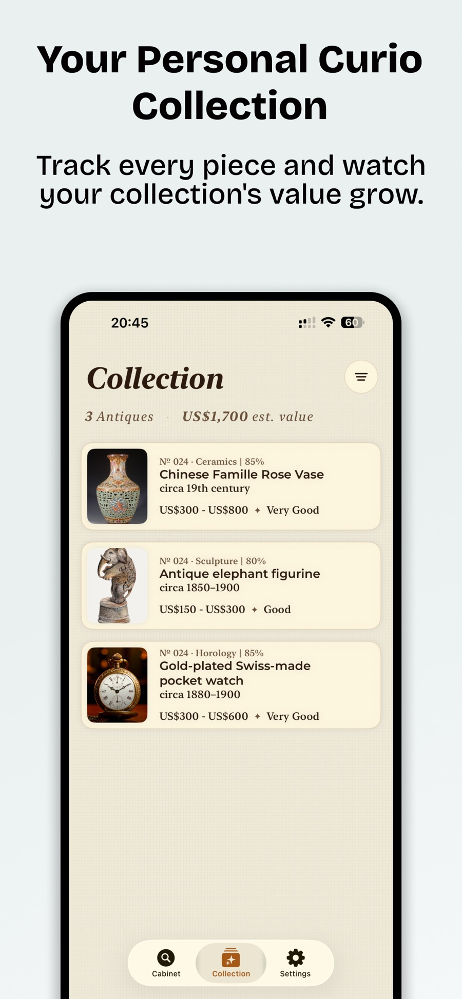

Identify instantly
Recognise antiques, vintage pieces and collectibles from a clear photograph.
Antique Identifier & Curator
Photograph an antique, vintage item or collectible. Curio identifies it and explains its history, origin, rarity, authenticity signals and estimated value.

What Curio does
Curio turns visual identification, historical research and collection management into one focused experience.
Recognise antiques, vintage pieces and collectibles from a clear photograph.
Explore estimated ranges, rarity, condition and authenticity signals.
Keep discoveries organised, watch estimated totals and export shareable records.
How it works
No specialist knowledge required. Curio guides you from the first photograph to a record worth keeping.
Capture the full item and any visible marks, stamps or signatures.
See the likely category, era, origin, material and confidence level.
Keep the result, track its estimated value or export it as a PDF.
Inside Curio
From first scan to a collection you can keep.



Curio guides
Practical, searchable guides for identifying, valuing and caring for antiques and collectibles.
Marks, materials, construction, wear and style.
ValueThe factors that shape a realistic estimate.
AuthenticityRecognise common signs of genuine age.
FurnitureJoinery, woods, hardware and period style.
JewelryHallmarks, settings, stones and construction.
CeramicsMaker marks, bodies, glazes and decoration.
WatchesMovement, case marks, serials and condition.
CoinsDates, mint marks, metal, grade and rarity.
GlasswareColour, pontil marks, mould seams and patterns.
Frequently asked
Yes. Curio is free to download from the App Store and you can begin identifying objects immediately.
Curio analyses materials, patterns, marks and craftsmanship and provides a confidence signal. Clear photos and maker marks produce the strongest results.
It considers category, era, condition and comparable pieces. Values are informative estimates rather than certified appraisals. Read the valuation guide.
Furniture, jewelry, coins, pottery, porcelain, glassware, watches, silverware, paintings, sculpture and many other collectibles.
Curio highlights materials, wear, construction and marks that may indicate authenticity. Learn what to look for.
Yes. Save results to your collection, track estimated values and export individual discoveries as polished PDFs.
Use one photograph to identify the object, understand its value and keep its history.
Download Curio